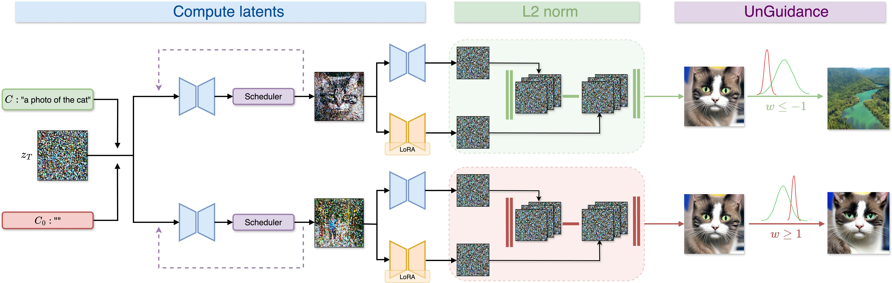
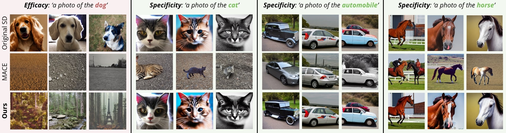
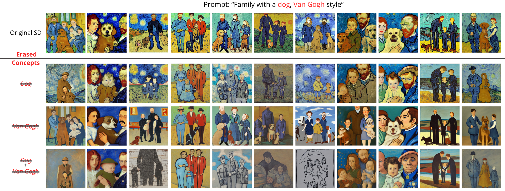
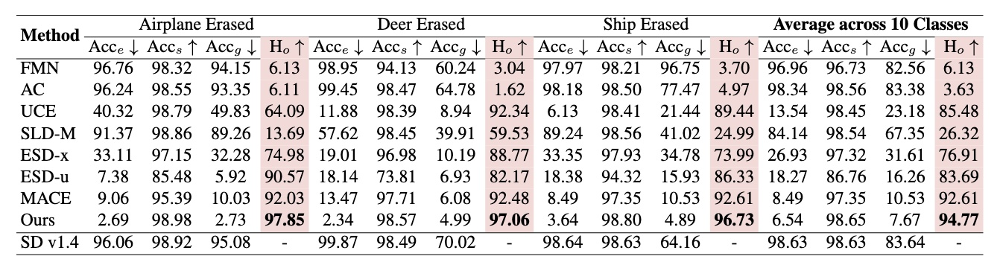

Abstract
Recent advances in large-scale text-to-image diffusion models have heightened concerns about their
potential misuse,
especially in generating harmful or misleading content. This underscores the urgent need for effective
machine unlearning, i.e., removing specific knowledge or concepts from pretrained
models without compromising overall performance. One possible approach is Low-Rank Adaptation
(LoRA), which offers an efficient means to fine-tune models for targeted unlearning. However, LoRA
often inadvertently alters unrelated
content, leading to diminished image fidelity and realism. To address this limitation, we introduce UnGuide—a novel approach which incorporates UnGuidance, a dynamic inference
mechanism that leverages Classifier-Free Guidance (CFG) to exert precise control over the
unlearning process. UnGuide modulates the guidance scale based on the
stability of a few
first steps of denoising processes, enabling selective unlearning by LoRA adapter. For prompts containing
the erased concept, the LoRA module predominates and is counterbalanced
by the base model; for unrelated prompts, the base model governs generation, preserving content fidelity.
Empirical results demonstrate that UnGuide achieves controlled concept
removal and retains the expressive power of diffusion models, outperforming existing LoRA-based
methods in both object erasure and explicit content removal tasks.
Method
Overview of the adaptive guidance mechanism in UnGuide. We quantify the LoRA adapter’s influence relative to the base model by comparing the norms of predicted noise for a target prompt c and a neutral prompt c0. After a short initial denoising phase (typically t = 10 steps), we perform several additional denoising steps (N = 10) to approximate the output distribution. The difference in norms between the base and LoRA model predictions informs adaptive adjustment of the guidance scale: for w ≤ −1, we prioritize the LoRA model to ensure concept erasure (e.g., removing the cat), while for w ≥ 1, we lean on the base model to preserve the original concept in generation.
Experimental Results
1. Object Erasure
Qualitative comparison on dog erasure. Images in the same column are generated using the same random seed.
2. NSFW
Qualitative comparison of explicit concept removal with other methods. Images in the same column are generated using the same random seed.
3. Artistic Styles
Qualitative visualization of unlearning the dog and the style of Vincent van Gogh. First, only the dog was unlearned; then, only the style; and finally, both adapters were connected. Images in the same column are generated using the same random seed.
Evaluation of erasing the CIFAR-10 classes
The primary metrics for evaluating object unlearning quality are Acce, Accs, and Accg. A key composite metric, Ho, quantifies how effectively a concept is unlearned while preserving the integrity of the remaining classes. All values reported in the table are expressed as percentages.
BibTeX
@misc{polowczyk2025unguidelearningforgetloraguided,
title={UnGuide: Learning to Forget with LoRA-Guided Diffusion Models},
author={Agnieszka Polowczyk and Alicja Polowczyk and Dawid Malarz and Artur Kasymov and Marcin Mazur and Jacek Tabor and Przemysław Spurek},
year={2025},
eprint={2508.05755},
archivePrefix={arXiv},
primaryClass={cs.CV},
url={https://arxiv.org/abs/2508.05755},
}